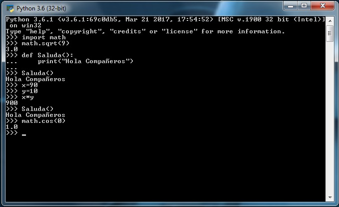
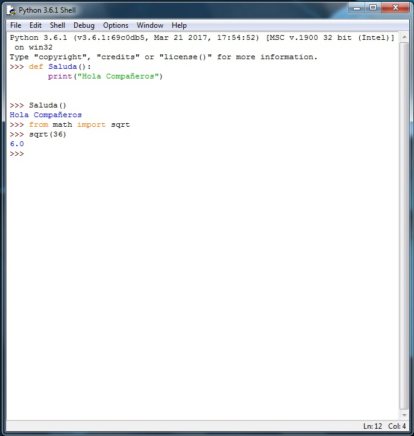
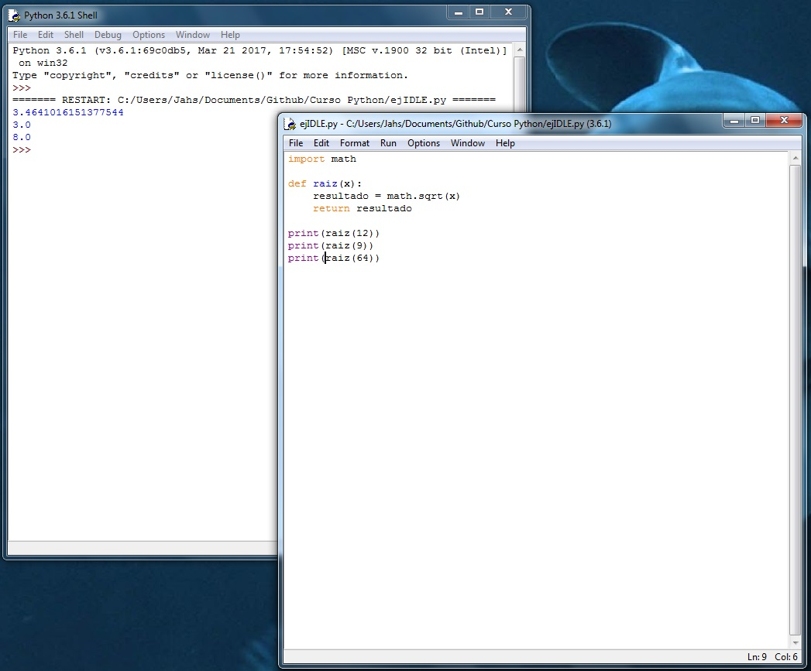

Curso Python
Consola e IDLE
Interfaz de línea de comando
Win + R
CMD
python
O simplemente abrir la consola de Python directamente

IDLE
(Integrated Development and Learning Environment o Entorno Integrado de Desarrollo y Aprendizaje)
 